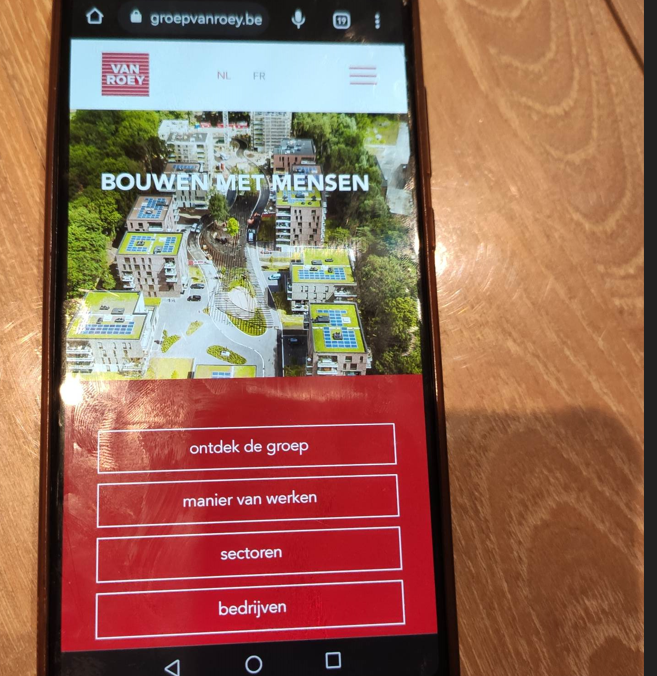
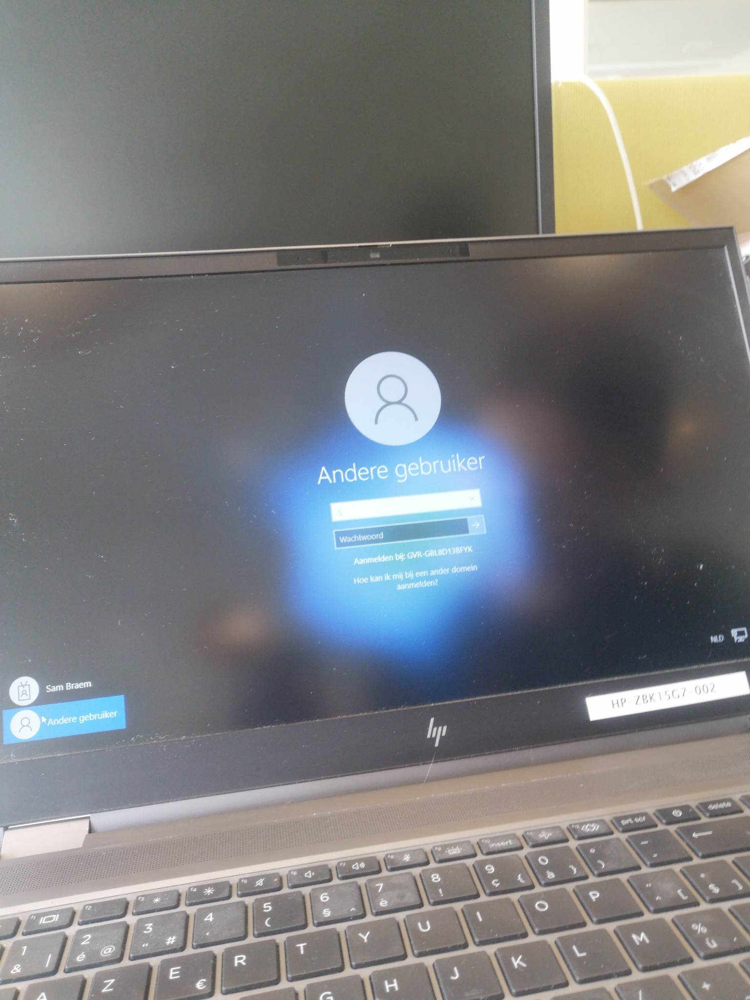
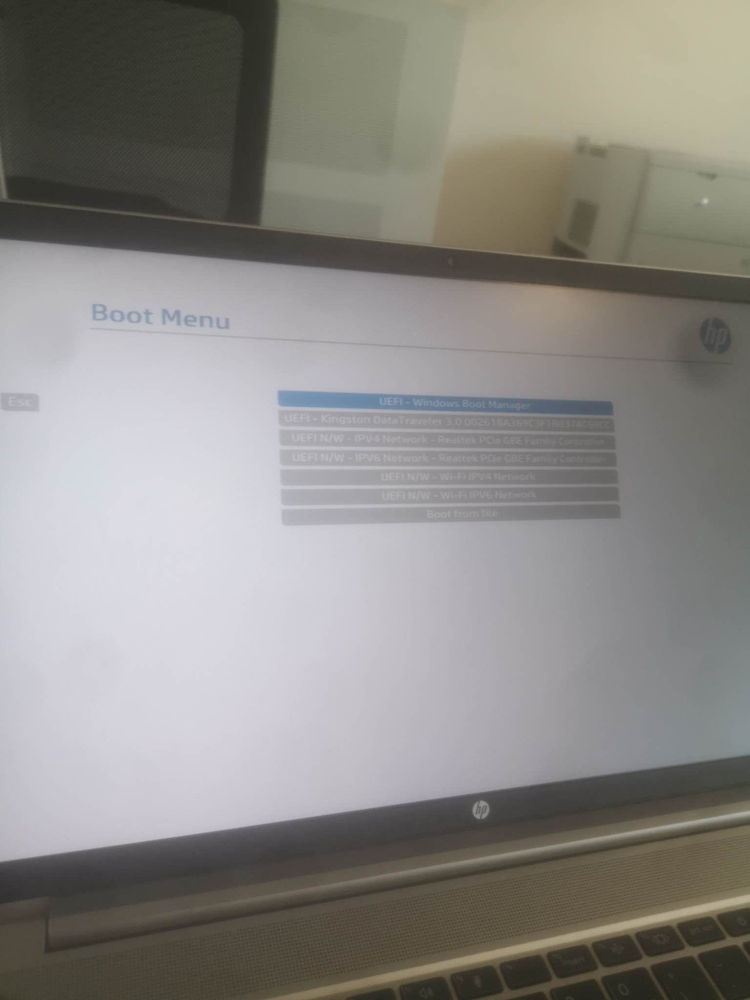

Dagverslag maandag
Mijn dag startte om 8 uur, toch een beetje spannend. Ik werd opgevangen door Martin. Mijn collega's zijn Michael, Joeri, Paul,.... met hen zal ik deze week het IT-gebeuren van het bedrijf leren kennen.
Server en beveiliging
Dan ben ik gaan kijken naar de server van het bedrijf. Nadat ik de server heb mogen bekijken, mocht ik ook de UPS bekijken. Een UPS is voorzien voor de noodstroomvoorziening. Nadien mocht ik met Michael mee helpen bij de helpdesk. Ook heb ik de firewall mogen bekijken.De helpdesk
Nadien mocht ik voornamelijk mee kijken, het was toen ook heel druk. Af en toe mocht ik een beetje meehelpen: bv. een laptop klaarmaken. Om twaalf uur hadden we onze middagpauze. Na de middag hebben we laptops van beneden naar boven verplaatst. Ik heb ook een gsm en een tablet mogen instellen. Vandaag ben ik veel mensen tegengekomen aan de helpdesk, ieders met zijn eigen laptop probleem.Wat heb ik geleerd?
Mijn interesse lag vooral bij de server te bekijken en problemen bij klanten op te lossen. Ik heb al veel geleerd over hoe ik gsm's moet instellen en hoe databanken noodzakelijk zijn in bedrijven. Ook heb ik een beetje geleerd over de firewall. Ik vond dat het goed ging omdat ik zelf heb kunnen meehelpen. Graag zou ik nog meer willen leren over het programmeren en hoe het programmeren er in een bedrijf aan toe gaat. Mijn stagedag eindigde om 17 uur. Mijn stagedag in 1 woord : druk. Dagverslag dinsdag
Laptops vervangen
Mijn werkdag startte om 8 uur. Ik mocht al direct starten bij het vervangen van oude laptops waarbij gegevens moesten overgezet worden. Michael vertelde me dat het al goed ging. Bij het vervangen van de laptops had ik geleerd hoe ze gesynchroniseerd moeten worden. En het was ook interessant om te zien hoe mensen licenties kregen en hoe men nieuwe gebruikers aanmaakte.
Databases
Ondertussen was de middag al gepasseerd. Toen heb ik veel uitleg gekregen van Joeri in verband met databases. Hij vertelde me hoe ze aan elkaar gekoppeld werden en hoe formules automatisch werden toegepast. Ook toonde hij me hoe programeercode werd gebruikt binnen de database. Ze werken momenteel nog op een ouder platform maar ze zijn van plan om een overstap te maken naar visual studio code. Ook vertelde hij me hoe ze via bluetooth konden kijken waar bepaalde producten lagen en daarmee automatisch kosten tegen het einde van de maand konden doorrekenen. Ik vond het zeer interessant.
Laptops resetten
Nadien heb ik Michael nog mogen helpen laptops opnieuw in te stellen. Hij heeft mij ook uitgelegd hoe ik een bootable usb stick kan maken voor windows 11. Ik heb ook bijgeleerd waar ik het serienummer kan vinden. Tegen het einde van de dag waren de laptops gereset. Mijn stagedag ik 1 woord: leerrijk.
Dagverslag woensdag
Laptops vervangen
Vandaag arriveerde ik om 8 uur aan het kantoor. Toen ik arriveerde mocht ik mensen helpen hun laptops vervangen. De laptops installeren verloopte vlot. Ze zeiden dat ik goed had geholpen.
Probleem laptops
Na de laptops te vervangen bleek er een probleem met Microsoft te zijn. Regelmatig kwamen er tijdens de dag mensen met hetzelfde probleem langs aan de helpdesk. Het probleem lag bij het startvenster. Mails konden niet meer verstuurd worden en apps geraakten niet meer opgestart. Om deze reden zou ik deze stagedag in 1 woord chaotisch noemen. Aan dit probleem was helaas weinig te doen. We konden het wel tijdelijk oplossen maar dan was het een paar uur later opnieuw kapot. Het probleem lag bij de nieuwe patch bij Microsoft.
Windows installeren
Tegen het einde van de dag mocht ik laptops resetten. Nadien mocht ik windows installeren via de BIOS. Dat was helemaal goed verlopen.
Wat heb ik bijgeleerd?
Ik heb veel bijgeleerd, wat je moet doen wanneer laptops niet werken. Hoe ik windows moet installeren. Ik zou nog graag meer willen leren hoe ik problemen kan oplossen.
